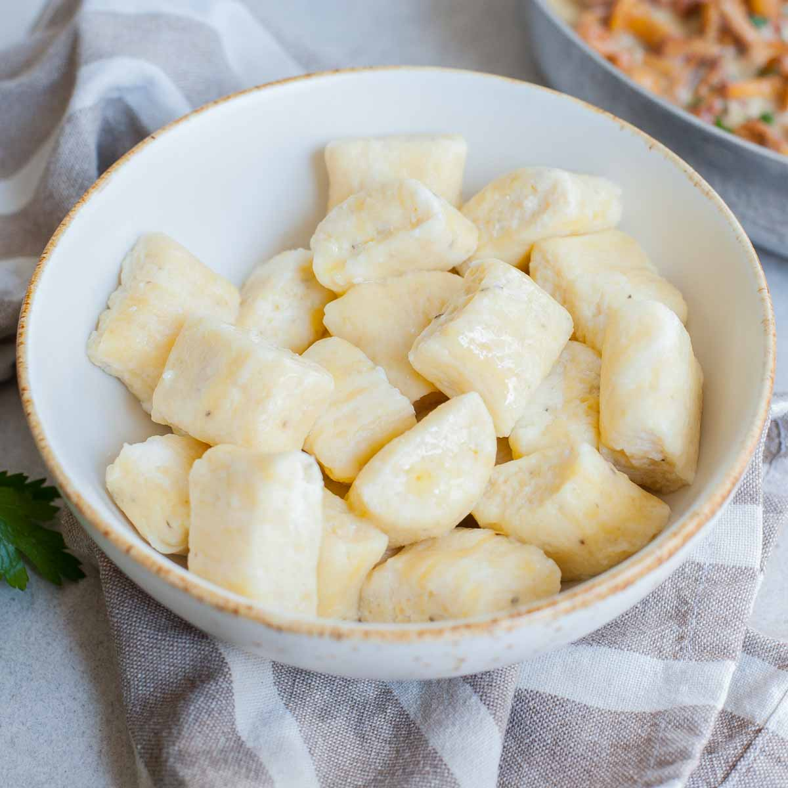

Ricotta Gnocchi

Description
Lighter than their potato based cousins, the ricotta gnocci are great for simple preparations like browned butter
and sage.
Ingredients
- Ricotta Cheese
- Eggs
- Finely grated parmesan cheese
- All purpose flour
- Salt
- Freshly cracked black pepper
Steps
- Combine ricotta and parmesan cheese in a large mixing bowl
- Add the eggs and mix well
- Season with salt and pepper
- Add a few tablespoons of flour to bring the dough together. Be careful not to add too much flour or to
overwork the dough.
- Allow the dough to chill for at least an hour
- On a lightly floured work surface, spoon out a quarter of the dough.
- Gently dust with more all purpose flour.
- Roll the dough into a 1/2" log
- Use a floured knife or bench knife to cut the dough into 1/2" pieces and move to a floured baking sheet.
- Repeat with the other 3/4 of the dough
- chill the formed gnocchi for at least an hour (up to one day) before cooking
- Bring a pot of water to a low boil and add salt
- Add the gnocchi to the water and let boil gently for about 5 mintues. When the gnocchi rise to the top and
have a sheen, they're ready to come out of the water.
Return Home